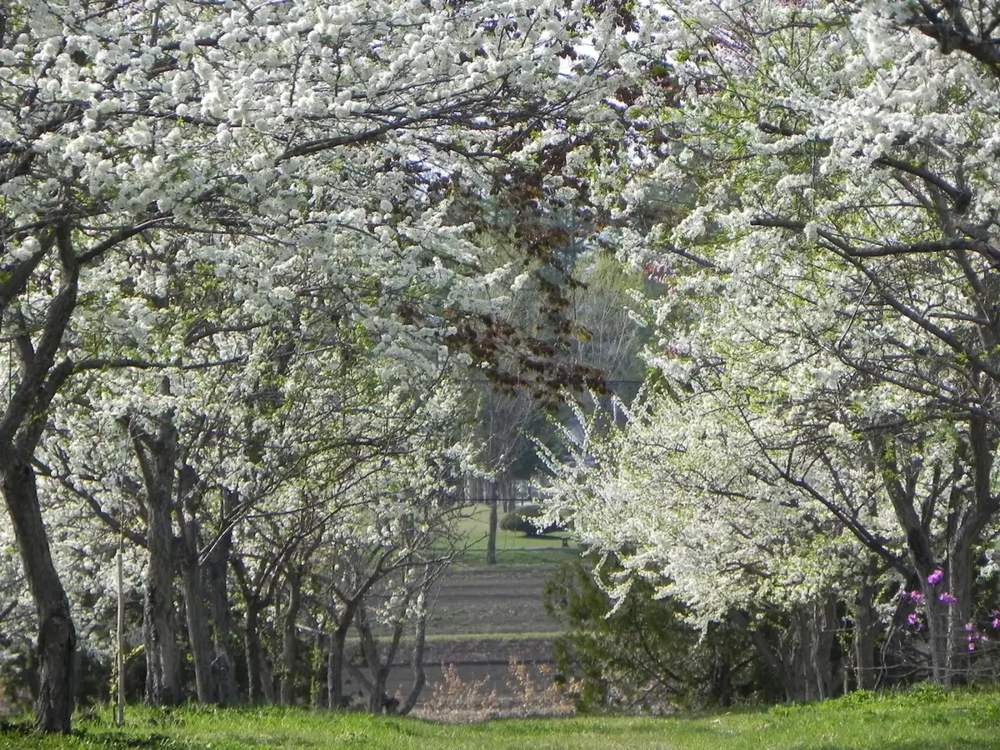
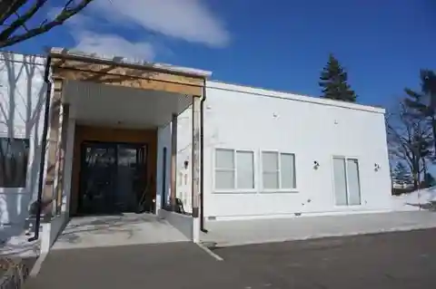
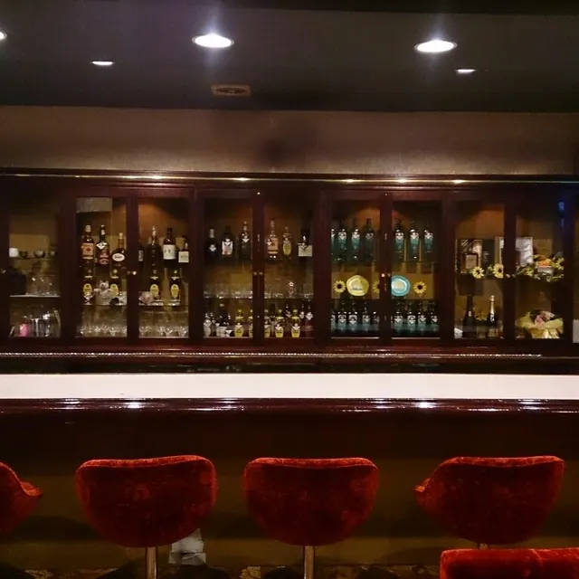
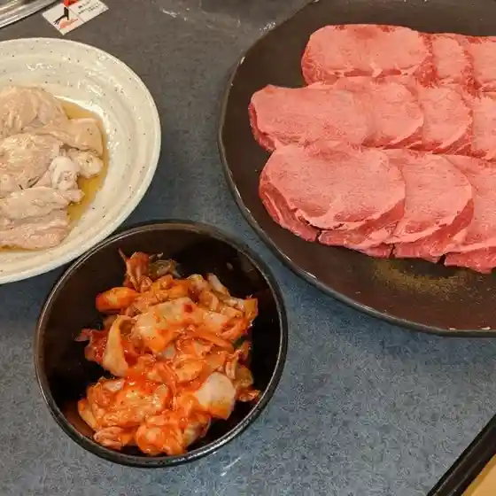
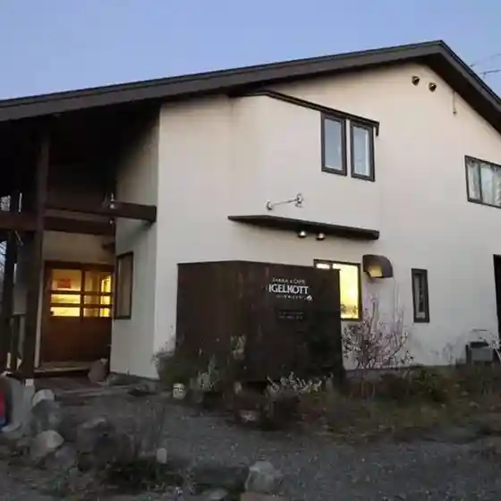
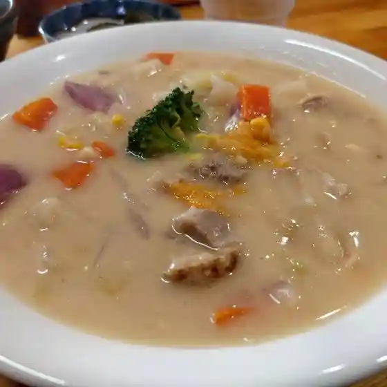
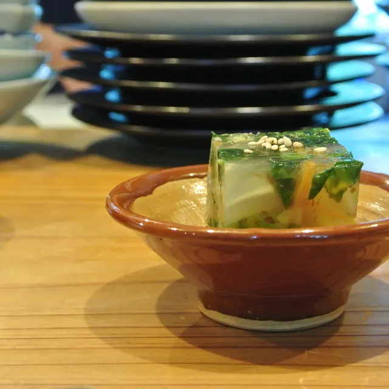
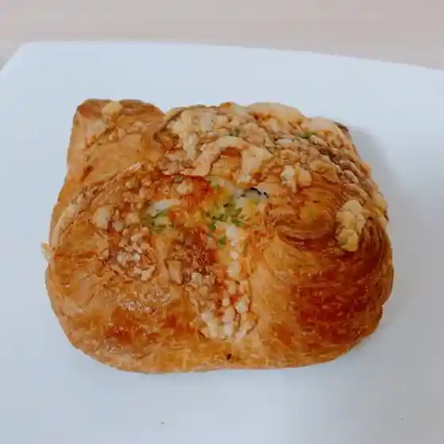
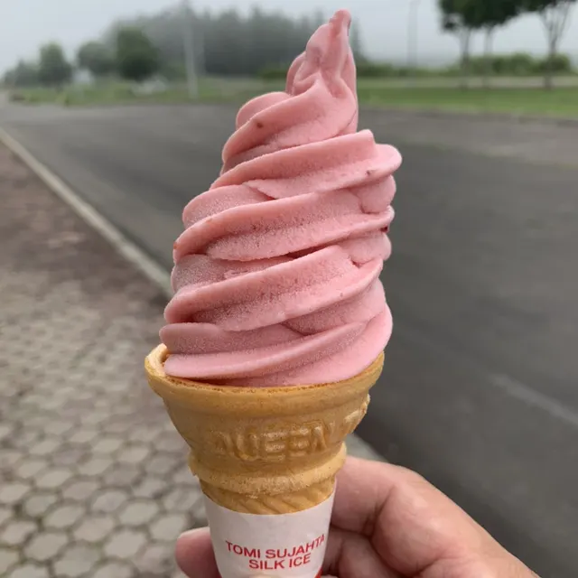
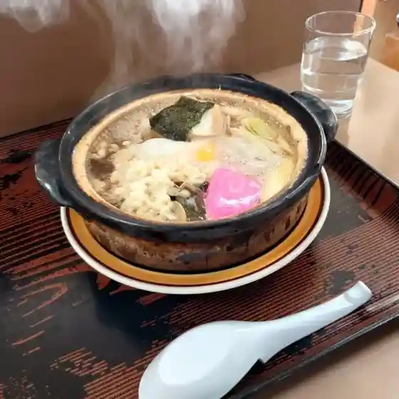

Sarabetsu
Sarabetsu · Hokkaido
Sarabetsu
Highlighted on the Hokkaido map.

Stay
hotel sarapark（更別村地域交流センター）

Hotel Sarapark
Village-run hotel in Sarabetsu, Hokkaido.
Dining
びざん

Bizan
焼肉 つがる亭

Yakiniku Tsugaru Tei
イーゲルコット

Iigerukotto
どんぐりむらとくる味の木

Dongurimuratokuru Aji No Ki
かっこう料理店

Kakkou Ryouriten
パン舎

Pan Sha
プラムハウス

Puramuhausu
あさひ食堂

Asahi Shokudou
日の出旅館
Hinode Ryokan
さらべつチーズ工房
Sarabetsu Chiizu Koubou
kitchen sarapark
Kitchen Sarapark
食彩空間 ほそや
Shokusai Kuukan Hosoya
すきた養鶏場
Sukita Youkei Ba
お菓子のニシヤマ
O Kashi No Nishiyama
ステラ テッラ アドマーニ
Sutera Terra Adomaani
食堂 わがや
Shokudou Wagaya
拉麺 二つで十分ですよ。
Raamen Futatsu De Juubun Desuyo .
道の駅さらべつ
Michi No Eki Sarabetsu
セイコーマート やまぐち更別店
Seikoomaato Yamaguchi Sarabetsu Mise
ポテト
Poteto
エトネ
Etone
ピッツェリア Tuka
Pittsueria Tuka
翡翠樓
Hisui Rou